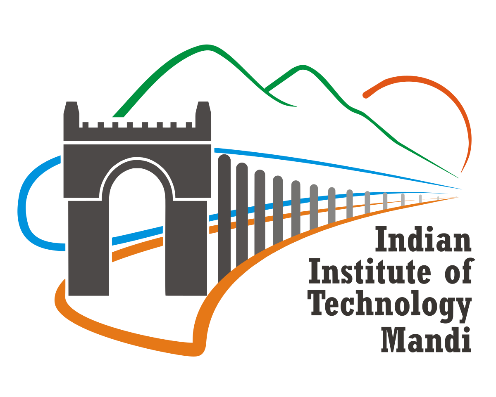
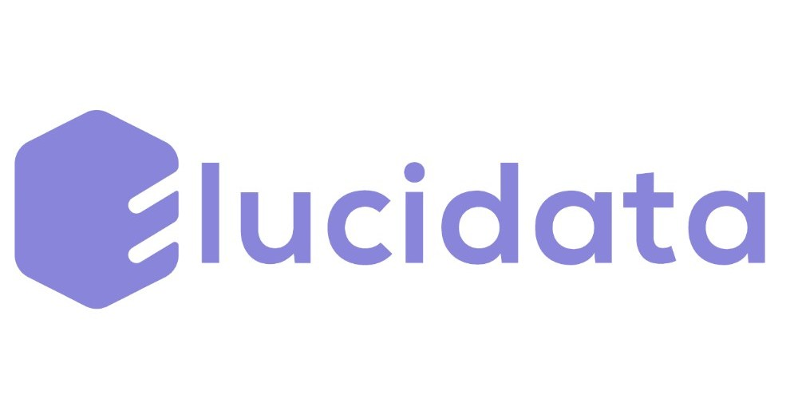
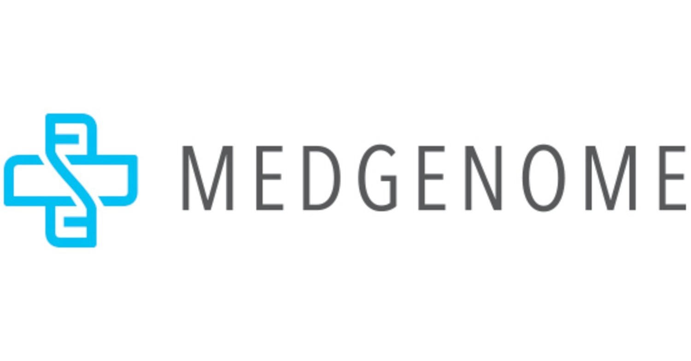

My Journey



Bioinformatics · AI for Biology · Drug Discovery
I am a bioinformatics researcher deeply passionate about AI for biology, protein modeling, and personalized medicine. My journey spans work at IIT Mandi, MedGenome, UBC, Georgia Tech, and Regeneron—building models to decode biological systems and design predictive tools for human health.
LLM + NLP pipeline to extract and classify Molecular Recognition Feature triggers and structural transitions from literature. Powered database creation and deep model training.
Summarized ~200 abstracts, engineered regex+prompt-based LLM queries, categorized into 8 ligand classes, and extracted secondary structures triggered upon interaction. Resulted in a clean, annotated MoRF-Trigger-Structure database and a poster at Georgia Tech's Suddath Symposium.
Built a BiLSTM and fine-tuned PLM model for residue-level prediction of ligand binding and disorder using the BioLiP database.
Multi-head classification setup with protein language model embeddings. Joint training on disorder regions and binding annotations with ligand class supervision.
Developed a graph-based algorithm to cluster B-cell receptor repertoires by lineage and selection pressure.
Used kNN graphs, Louvain clustering, MST traversals, and custom rep-sequence heuristics to reveal affinity hierarchies within immune repertoires.